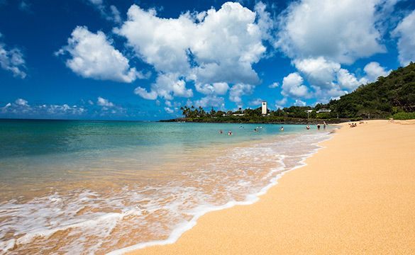

The North Shore of Oʻahu is famous for its stunning beaches, world-class surfing spots, and vibrant local culture. Here are some of the most popular beaches you can explore:
Waimea Bay
Waimea Bay is renowned for its big waves during the winter months, making it a favorite spot for professional surfers. In the summer, the bay transforms into a calm paradise perfect for swimming and snorkeling.
Sunset Beach
Sunset Beach is another iconic surfing destination on the North Shore. It offers breathtaking sunsets and is ideal for both experienced surfers and beachgoers looking to relax by the ocean.
Ehukai Beach (Banzai Pipeline)
Ehukai Beach, commonly known as Banzai Pipeline, is famous for its powerful waves that break over a shallow reef. It attracts surfers from around the world who come to test their skills on these challenging waves.
Shark's Cove
Shark's Cove is a popular snorkeling spot with clear waters and abundant marine life. It's a great place to explore tide pools and see colorful fish and sea turtles.
Laniakea Beach (Turtle Beach)
Laniakea Beach, also known as Turtle Beach, is famous for its resident sea turtles. Visitors often come here to watch these gentle creatures basking in the sun or swimming in the shallow waters.
1. Include 1 image using an IMG tag

2. Create a favicon and link it using the link tag
Idk if i can answer it here but I'll link it in the head part
3. Answer the following questions on your page:
1. When should you use a background image and when should you use the IMG tag
Basically like when you want the image to be a backdrop as part of like a section or header, use the background image, but when its part of like an article using the IMG tag.